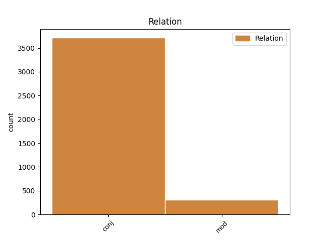
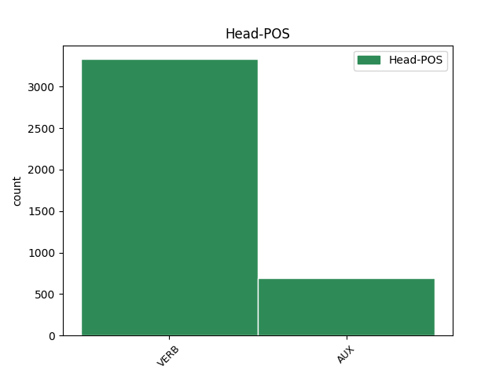
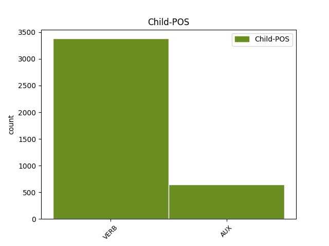

Distribution of features within this leaf



Agreement Rules sorted by frequency.
- When the dependent token is the conjunct(conj) of the head token, and the dependent token is VERB.
1 Galtungs _ _ _ _ 0 _ _ _
2 atšķirības _ _ _ _ 0 _ _ _
3 starp _ _ _ _ 0 _ _ _
4 dažādām _ _ _ _ 0 _ _ _
5 vardarbības _ _ _ _ 0 _ _ _
6 formām _ _ _ _ 0 _ _ _
7 raksturo _ _ _ _ 0 _ _ _
8 šādi _ _ _ _ 0 _ _ _
9 : _ _ _ _ 0 _ _ _
10 tiešā _ _ _ _ 0 _ _ _
11 vardarbība _ _ _ _ 0 _ _ _
12 ir _ _ _ _ 0 _ _ _
13 notikums _ _ _ _ 0 _ _ _
14 / _ _ _ _ 0 _ _ _
15 akts _ _ _ _ 0 _ _ _
16 , _ _ _ _ 0 _ _ _
17 strukturāla _ _ _ _ 0 _ _ _
18 vardarbība _ _ _ _ 0 _ _ _
19 ir _ _ _ _ 0 _ _ _
20 process _ _ _ _ 0 _ _ _
21 , _ _ _ _ 0 _ _ _
22 kultūras _ _ _ _ 0 _ _ _
23 vardarbība _ _ _ _ 0 _ _ _
24 nemainās mainīties VERB vmyipi330ay Evident=Fh|Mood=Ind|Person=3|Polarity=Neg|Reflex=Yes|Tense=Pres|VerbForm=Fin|Voice=Act 0 _ _ _
25 tik _ _ _ _ 0 _ _ _
26 ātri _ _ _ _ 0 _ _ _
27 un _ _ _ _ 0 _ _ _
28 ilgstoši _ _ _ _ 0 _ _ _
29 saglabā saglabāt VERB vmnipt230an Evident=Fh|Mood=Ind|Person=3|Polarity=Pos|Tense=Pres|VerbForm=Fin|Voice=Act 24 conj _ LvtbNodeId=a-z99-p16s7w29
30 savu _ _ _ _ 0 _ _ _
31 pamatbūtību _ _ _ _ 0 _ _ _
32 . _ _ _ _ 0 _ _ _
1 Galtungs _ _ _ _ 0 _ _ _
2 atšķirības _ _ _ _ 0 _ _ _
3 starp _ _ _ _ 0 _ _ _
4 dažādām _ _ _ _ 0 _ _ _
5 vardarbības _ _ _ _ 0 _ _ _
6 formām _ _ _ _ 0 _ _ _
7 raksturo _ _ _ _ 0 _ _ _
8 šādi _ _ _ _ 0 _ _ _
9 : _ _ _ _ 0 _ _ _
10 tiešā _ _ _ _ 0 _ _ _
11 vardarbība _ _ _ _ 0 _ _ _
12 ir būt AUX vcnipii30an Evident=Fh|Mood=Ind|Person=3|Polarity=Pos|Tense=Pres|VerbForm=Fin|Voice=Act 0 _ _ _
13 notikums _ _ _ _ 0 _ _ _
14 / _ _ _ _ 0 _ _ _
15 akts _ _ _ _ 0 _ _ _
16 , _ _ _ _ 0 _ _ _
17 strukturāla _ _ _ _ 0 _ _ _
18 vardarbība _ _ _ _ 0 _ _ _
19 ir būt AUX vcnipii30an Evident=Fh|Mood=Ind|Person=3|Polarity=Pos|Tense=Pres|VerbForm=Fin|Voice=Act 12 conj _ LvtbNodeId=a-z99-p16s7w19
20 process _ _ _ _ 0 _ _ _
21 , _ _ _ _ 0 _ _ _
22 kultūras _ _ _ _ 0 _ _ _
23 vardarbība _ _ _ _ 0 _ _ _
24 nemainās _ _ _ _ 0 _ _ _
25 tik _ _ _ _ 0 _ _ _
26 ātri _ _ _ _ 0 _ _ _
27 un _ _ _ _ 0 _ _ _
28 ilgstoši _ _ _ _ 0 _ _ _
29 saglabā _ _ _ _ 0 _ _ _
30 savu _ _ _ _ 0 _ _ _
31 pamatbūtību _ _ _ _ 0 _ _ _
32 . _ _ _ _ 0 _ _ _
1 Daudzi _ _ _ _ 0 _ _ _
2 apgalvojumi _ _ _ _ 0 _ _ _
3 ir būt AUX vcnipii30an Evident=Fh|Mood=Ind|Person=3|Polarity=Pos|Tense=Pres|VerbForm=Fin|Voice=Act 0 _ _ _
4 literatūrā _ _ _ _ 0 _ _ _
5 apgāzti _ _ _ _ 0 _ _ _
6 , _ _ _ _ 0 _ _ _
7 kas _ _ _ _ 0 _ _ _
8 liecina liecināt VERB vmnipt330an Evident=Fh|Mood=Ind|Person=3|Polarity=Pos|Tense=Pres|VerbForm=Fin|Voice=Act 3 mod _ LvtbNodeId=a-z88-p34s5w8|SpaceAfter=No
9 , _ _ _ _ 0 _ _ _
10 ka _ _ _ _ 0 _ _ _
11 O. _ _ _ _ 0 _ _ _
12 Dankers _ _ _ _ 0 _ _ _
13 mēģinājis _ _ _ _ 0 _ _ _
14 slēpt _ _ _ _ 0 _ _ _
15 patiesību _ _ _ _ 0 _ _ _
16 no _ _ _ _ 0 _ _ _
17 pasaules _ _ _ _ 0 _ _ _
18 , _ _ _ _ 0 _ _ _
19 tāpēc _ _ _ _ 0 _ _ _
20 nekādu _ _ _ _ 0 _ _ _
21 “ _ _ _ _ 0 _ _ _
22 tiesu _ _ _ _ 0 _ _ _
23 ” _ _ _ _ 0 _ _ _
24 no _ _ _ _ 0 _ _ _
25 viņa _ _ _ _ 0 _ _ _
26 darba _ _ _ _ 0 _ _ _
27 vēsture _ _ _ _ 0 _ _ _
28 nevar _ _ _ _ 0 _ _ _
29 spriest _ _ _ _ 0 _ _ _
30 . _ _ _ _ 0 _ _ _
1 Iespējams _ _ _ _ 0 _ _ _
2 , _ _ _ _ 0 _ _ _
3 ka _ _ _ _ 0 _ _ _
4 pazemība _ _ _ _ 0 _ _ _
5 senajā _ _ _ _ 0 _ _ _
6 Izraēlā _ _ _ _ 0 _ _ _
7 tika tikt AUX vtnisi130an Evident=Fh|Mood=Ind|Person=3|Polarity=Pos|Tense=Past|VerbForm=Fin|Voice=Act 0 _ _ _
8 pārņemta _ _ _ _ 0 _ _ _
9 kā _ _ _ _ 0 _ _ _
10 ierēdņu _ _ _ _ 0 _ _ _
11 tikums _ _ _ _ 0 _ _ _
12 no _ _ _ _ 0 _ _ _
13 apkārtējām _ _ _ _ 0 _ _ _
14 kultūrām _ _ _ _ 0 _ _ _
15 , _ _ _ _ 0 _ _ _
16 kas _ _ _ _ 0 _ _ _
17 tika tikt AUX vtnisi130an Evident=Fh|Mood=Ind|Person=3|Polarity=Pos|Tense=Past|VerbForm=Fin|Voice=Act 7 mod _ LvtbNodeId=a-z99-p160s2w17
18 piemērota _ _ _ _ 0 _ _ _
19 Jahves _ _ _ _ 0 _ _ _
20 reliģijai _ _ _ _ 0 _ _ _
21 ( _ _ _ _ 0 _ _ _
22 Jahve _ _ _ _ 0 _ _ _
23 ienīst _ _ _ _ 0 _ _ _
24 visus _ _ _ _ 0 _ _ _
25 augstprātīgos _ _ _ _ 0 _ _ _
26 un _ _ _ _ 0 _ _ _
27 lepnos _ _ _ _ 0 _ _ _
28 ) _ _ _ _ 0 _ _ _
29 . _ _ _ _ 0 _ _ _
Disagree Examples:
1 " _ _ _ _ 0 _ _ _
2 Rallijā _ _ _ _ 0 _ _ _
3 dalībnieki _ _ _ _ 0 _ _ _
4 sadalīti sadalīt VERB vmnpdmpnpsypn Aspect=Perf|Case=Nom|Definite=Def|Degree=Pos|Gender=Masc|Number=Plur|Polarity=Pos|Tense=Past|VerbForm=Part|Voice=Pass 0 _ _ _
5 pa _ _ _ _ 0 _ _ _
6 trim _ _ _ _ 0 _ _ _
7 grupām _ _ _ _ 0 _ _ _
8 , _ _ _ _ 0 _ _ _
9 un _ _ _ _ 0 _ _ _
10 katrā _ _ _ _ 0 _ _ _
11 startē startēt VERB vmnipt230an Evident=Fh|Mood=Ind|Person=3|Polarity=Pos|Tense=Pres|VerbForm=Fin|Voice=Act 4 conj _ LvtbNodeId=a-c3-p12s2w11
12 pa _ _ _ _ 0 _ _ _
13 50 _ _ _ _ 0 _ _ _
14 automašīnām _ _ _ _ 0 _ _ _
15 . _ _ _ _ 0 _ _ _
1 Elmārs _ _ _ _ 0 _ _ _
2 pastāstīja _ _ _ _ 0 _ _ _
3 , _ _ _ _ 0 _ _ _
4 ka _ _ _ _ 0 _ _ _
5 patiešām _ _ _ _ 0 _ _ _
6 zēnam _ _ _ _ 0 _ _ _
7 neesot _ _ _ _ 0 _ _ _
8 paveicies _ _ _ _ 0 _ _ _
9 , _ _ _ _ 0 _ _ _
10 roka _ _ _ _ 0 _ _ _
11 esot _ _ _ _ 0 _ _ _
12 diezgan _ _ _ _ 0 _ _ _
13 nopietni _ _ _ _ 0 _ _ _
14 traumēta _ _ _ _ 0 _ _ _
15 ( _ _ _ _ 0 _ _ _
16 lauzta lauzt VERB vmnpdfsnpsnpn Aspect=Perf|Case=Nom|Definite=Ind|Degree=Pos|Gender=Fem|Number=Sing|Polarity=Pos|Tense=Past|VerbForm=Part|Voice=Pass 0 _ _ _
17 gan _ _ _ _ 0 _ _ _
18 neesot _ _ _ _ 0 _ _ _
19 , _ _ _ _ 0 _ _ _
20 tik _ _ _ _ 0 _ _ _
21 daudz _ _ _ _ 0 _ _ _
22 viņi _ _ _ _ 0 _ _ _
23 saprotot saprast VERB vmnrpt100an Evident=Nfh|Mood=Qot|Polarity=Pos|Tense=Pres|VerbForm=Fin|Voice=Act 16 conj _ LvtbNodeId=a-c33-p157s3w23|SpaceAfter=No
24 ) _ _ _ _ 0 _ _ _
25 , _ _ _ _ 0 _ _ _
26 sadauzīts _ _ _ _ 0 _ _ _
27 arī _ _ _ _ 0 _ _ _
28 plecs _ _ _ _ 0 _ _ _
29 un _ _ _ _ 0 _ _ _
30 mugura _ _ _ _ 0 _ _ _
31 . _ _ _ _ 0 _ _ _
1 Meistars _ _ _ _ 0 _ _ _
2 bija būt AUX vcnisii30an Evident=Fh|Mood=Ind|Person=3|Polarity=Pos|Tense=Past|VerbForm=Fin|Voice=Act 0 _ _ _
3 teicis _ _ _ _ 0 _ _ _
4 , _ _ _ _ 0 _ _ _
5 ka _ _ _ _ 0 _ _ _
6 teorētiski _ _ _ _ 0 _ _ _
7 jau _ _ _ _ 0 _ _ _
8 varētu _ _ _ _ 0 _ _ _
9 likt _ _ _ _ 0 _ _ _
10 mājā _ _ _ _ 0 _ _ _
11 arī _ _ _ _ 0 _ _ _
12 tos _ _ _ _ 0 _ _ _
13 , _ _ _ _ 0 _ _ _
14 taču _ _ _ _ 0 _ _ _
15 daudzi _ _ _ _ 0 _ _ _
16 no _ _ _ _ 0 _ _ _
17 šiem _ _ _ _ 0 _ _ _
18 blokiem _ _ _ _ 0 _ _ _
19 , _ _ _ _ 0 _ _ _
20 tikko _ _ _ _ 0 _ _ _
21 tos _ _ _ _ 0 _ _ _
22 paņem _ _ _ _ 0 _ _ _
23 rokās _ _ _ _ 0 _ _ _
24 , _ _ _ _ 0 _ _ _
25 sadalās sadalīties VERB vmyipi330an Evident=Fh|Mood=Ind|Person=3|Polarity=Pos|Reflex=Yes|Tense=Pres|VerbForm=Fin|Voice=Act 2 conj _ LvtbNodeId=a-c33-p182s5w25
26 mazākos _ _ _ _ 0 _ _ _
27 gabalos _ _ _ _ 0 _ _ _
28 , _ _ _ _ 0 _ _ _
29 tāpēc _ _ _ _ 0 _ _ _
30 nav _ _ _ _ 0 _ _ _
31 vērts _ _ _ _ 0 _ _ _
32 tos _ _ _ _ 0 _ _ _
33 vispār _ _ _ _ 0 _ _ _
34 kustināt _ _ _ _ 0 _ _ _
35 . _ _ _ _ 0 _ _ _
1 Dēla _ _ _ _ 0 _ _ _
2 domas _ _ _ _ 0 _ _ _
3 netika tikt AUX vtnisi130ay Evident=Fh|Mood=Ind|Person=3|Polarity=Neg|Tense=Past|VerbForm=Fin|Voice=Act 0 _ _ _
4 uzklausītas _ _ _ _ 0 _ _ _
5 , _ _ _ _ 0 _ _ _
6 jo _ _ _ _ 0 _ _ _
7 , _ _ _ _ 0 _ _ _
8 kā _ _ _ _ 0 _ _ _
9 jau _ _ _ _ 0 _ _ _
10 teicu _ _ _ _ 0 _ _ _
11 iepriekš _ _ _ _ 0 _ _ _
12 , _ _ _ _ 0 _ _ _
13 māju _ _ _ _ 0 _ _ _
14 mēs _ _ _ _ 0 _ _ _
15 celsim _ _ _ _ 0 _ _ _
16 sev _ _ _ _ 0 _ _ _
17 , _ _ _ _ 0 _ _ _
18 tāpēc _ _ _ _ 0 _ _ _
19 svarīgi _ _ _ _ 0 _ _ _
20 ir būt AUX vcnipii30an Evident=Fh|Mood=Ind|Person=3|Polarity=Pos|Tense=Pres|VerbForm=Fin|Voice=Act 3 conj _ LvtbNodeId=a-c33-p25s5w20
21 tikai _ _ _ _ 0 _ _ _
22 tas _ _ _ _ 0 _ _ _
23 , _ _ _ _ 0 _ _ _
24 ko _ _ _ _ 0 _ _ _
25 gribam _ _ _ _ 0 _ _ _
26 mēs _ _ _ _ 0 _ _ _
27 abi _ _ _ _ 0 _ _ _
28 ar _ _ _ _ 0 _ _ _
29 sievu _ _ _ _ 0 _ _ _
30 . _ _ _ _ 0 _ _ _
1 Bet _ _ _ _ 0 _ _ _
2 tad _ _ _ _ 0 _ _ _
3 , _ _ _ _ 0 _ _ _
4 izgājis _ _ _ _ 0 _ _ _
5 ārā _ _ _ _ 0 _ _ _
6 , _ _ _ _ 0 _ _ _
7 mirkli _ _ _ _ 0 _ _ _
8 padomāju padomāt VERB vmnist21san Evident=Fh|Mood=Ind|Number=Sing|Person=1|Polarity=Pos|Tense=Past|VerbForm=Fin|Voice=Act 0 _ _ _
9 : _ _ _ _ 0 _ _ _
10 kāpēc _ _ _ _ 0 _ _ _
11 gan _ _ _ _ 0 _ _ _
12 man _ _ _ _ 0 _ _ _
13 ir būt AUX vcnipii30an Evident=Fh|Mood=Ind|Person=3|Polarity=Pos|Tense=Pres|VerbForm=Fin|Voice=Act 8 conj _ LvtbNodeId=a-c33-p43s4w13
14 jāpiekrīt _ _ _ _ 0 _ _ _
15 , _ _ _ _ 0 _ _ _
16 ja _ _ _ _ 0 _ _ _
17 pašam _ _ _ _ 0 _ _ _
18 no _ _ _ _ 0 _ _ _
19 tā _ _ _ _ 0 _ _ _
20 nav _ _ _ _ 0 _ _ _
21 nekāda _ _ _ _ 0 _ _ _
22 labuma _ _ _ _ 0 _ _ _
23 ? _ _ _ _ 0 _ _ _